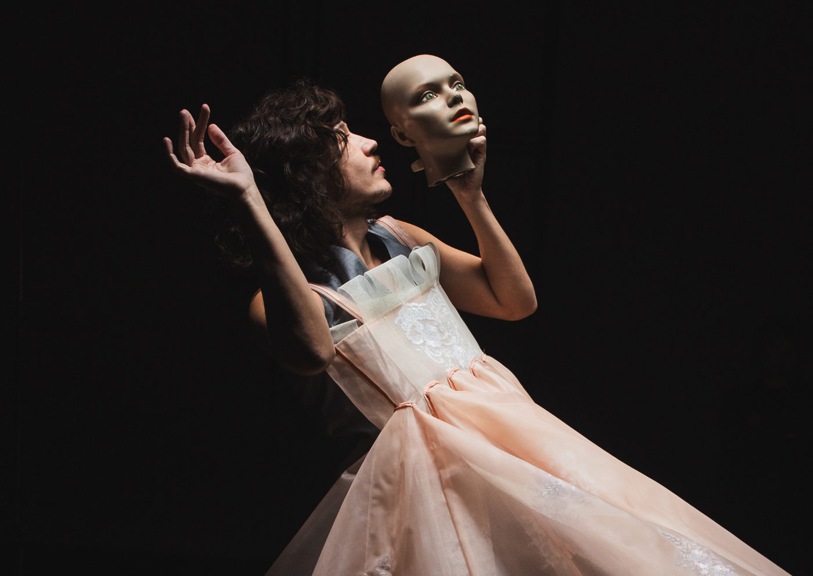

Ave Lola estreia releitura solo de Romeu e Julieta em Curitiba

Com direção de Ana Rosa Tezza, montagem protagonizada por Evandro Santiago aposta em teatro de objetos, memória afetiva e música ao vivo para recontar o clássico de Shakespeare de forma poética e contemporânea
A Companhia Ave Lola estreia sua nova produção em Curitiba: uma releitura sensível e inventiva de Romeu e Julieta, clássico absoluto de William Shakespeare. A temporada acontece entre os dias 6 de agosto e 7 de setembro de 2025, na sede da companhia, no centro da capital paranaense. Os ingressos já estão à venda pelo site Disk Ingressos, com preços promocionais no primeiro lote.
Sob a direção de Ana Rosa Genari Tezza, a peça ganha novos contornos em uma proposta cênica que une teatro solo, teatro de objetos, memória afetiva e uma atmosfera sonora composta e executada ao vivo por Arthur Jaime e Breno Monte Serrat. No palco, o ator Evandro Santiago conduz o público por uma jornada delicada sobre a persistência da arte em tempos de silêncio e apagamento.
Shakespeare sob nova luz
Na montagem, o espectador é transportado para um teatro interditado, onde um artista solitário decide reviver as cenas de um espetáculo interrompido. A partir desse ponto de partida, nasce um solo poético que revisita a tragédia de amor mais conhecida da literatura ocidental — mas a partir do olhar de quem faz teatro como resistência.
“Mais do que contar a história de dois amantes, esta peça fala sobre a paixão de um ator por seu ofício. É sobre permanecer, mesmo diante das ruínas. É sobre o teatro como refúgio e redenção”, afirma a diretora Ana Rosa Tezza.
A montagem estreou em uma apresentação especial para comunidades ribeirinhas durante a Virada Amazônica, em julho, e agora chega oficialmente a Curitiba com nova energia e maturidade.
Uma experiência sensorial
Com duração de 1h40 e classificação indicativa de 14 anos, Sozinho com Romeu e Julieta propõe uma experiência teatral singular, que ativa os sentidos e convida à introspecção. A cenografia e os objetos ganham protagonismo junto à trilha ao vivo, que acompanha e amplia as emoções do texto.
O resultado é um espetáculo que combina tradição e invenção, resgatando o poder atemporal de Shakespeare ao mesmo tempo em que lança luz sobre os desafios da arte contemporânea.
SERVIÇO
Sozinho com Romeu e Julieta De 6 de agosto a 7 de setembro de 2025
📍 Local: Teatro Ave Lola – Rua Marechal Deodoro, 1227 – Curitiba/PR ⏱ Duração: 1h40
👥 Classificação indicativa: 14 anos
🎟️ Ingressos: Lote 1 – Ingresso Popular: R$ 50 (inteira) | R$ 25 (meia)
Lote 2: R$ 80 (inteira) | R$ 40 (meia)
🛒 Vendas online: Disk Ingressos
🔗 Instagram: @ave_lola
🌐 Site oficial: avelola.com